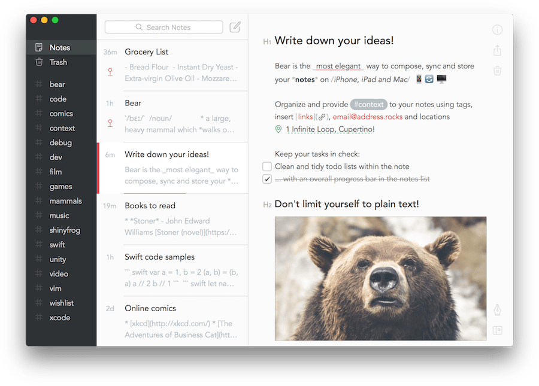
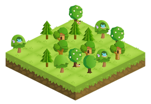
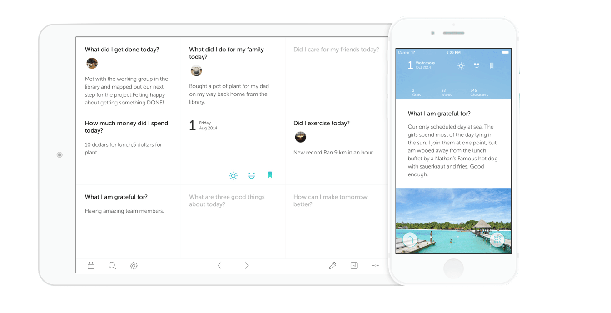

Productivity & Growth Hacks
January 1st, 2018
If you are a student of the Flatiron School, of code, or of life, you will likely need a few tools at your disposal to stay organized, take notes, track progress, and remain sane. There are many apps out there, but I'm going to share the ones that I find the most helpful at the moment and why. One thing they all have in common is really great design. As a strong advocate of good UI, this makes me happy and I hope they will make you happy too!
The first one, which I absolutely recommend if you are learning to code is Bear Writer for Mac. Sorry Windows users, this one is Mac only, but it is beautiful. The interface is sleek and simple, it allows for your standard formatting--headers, bulleted lists, numbered lists, checkboxes. etc. but one great feature is code blocks. You can do a single line snippet or a full code block. Within the code block, you can specify your language after the ``` for proper syntax highlighting. What I like about Bear besides the UI and formatting options is it autosaves, all your notes are visible and accessible from the sidebar, a quick search will allow you to find things quick, and you can use hashtags to make categorizing your notes even easier, for example #code or #ruby.

The second one is Forest. One thing I learned from the Flatiron School is the Pomodoro Technique-- 25 minute timers to focus on a task with no distractions, followed by a 5 minute break. Now, you could set timers on your phone, but that's no fun because to track what you got done, you'd have to manually log it elsewhere. There are many Pomodoro apps out there that allow you to store information on what you did, but why not do it with a little extra incentive? On the Forest mobile app, when you start a session, it plants a tree. If you leave the app, your tree dies. When you finish, you get coins to buy new trees and can mark down what you did. As the day goes on, you build a forest. It's incentivizing to look at your forest and try to make it lusher!

The third is a personal new favorite of mine: Grid Diary. This is another mobile app. It's a similar concept to Day One and other daily journaling apps, but this is the best one I've found so far and the UI is phenomenal. It sets up your daily journal entries as a grid with boxes that pose a question. You can choose what and how many questions you want to answer on any given day and remove or swap out the rest. You mark down the weather and your mood for the day and can add photos if you like. Every time you press something it makes a little noise and that makes me happy. There are a number of views-- entries, grids, questions, and photos, so you can get quick overview of your recent data. It's hard to explain without using it, so go download it! It's great to be recording the lessons you've done each day to track your progress, as well as other things you might be proud of or not so proud of and want to do better with the following day.

The last app I will recommend is Aura. If you're thinking, "I'm a coder, not a monk", then you've already confirmed needing a mindfulness practice. Mindfulness is for everybody. It is about taking a moment to relax your body and mind. When sitting at a computer long hours and problem solving, stress can mount easily. Even if you start with 3-5 minutes a day, that 3-5 minutes could end up being the most impactful part of your day. In physics, an object in motion stays in motion unless interrupted. Meditating is like interrupting your mind in motion. It gives you a chance to become aware of the tension in your body and to check in with yourself. An app that gives you guided meditations makes it easier to do.
Flexbox Tutorial
December 31st, 2017
I noticed a few Learn.co students asking around about flexbox, so decided to make a video tutorial giving a basic introduction to flexbox. In this lesson, we cover:
- Displaying Parent Container as
flex - Orienting Flex Items on Horizontal Axis With
justify-content
(default)flex-startflex-endcenterspace-aroundspace-between- Orienting Flex Items on Vertical Axis With
align-items
(default)flex-startflex-endcenterspace-aroundspace-betweenbaseline- Flex Items Can Be Flex Containers
- Rows (default) vs Columns With
flex-direction
My Intro to Web Development
November 20th, 2017
I first became interested in web development when I was seven years old. I learned some basic HTML through Neopets, which had HTML lessons at the time and was geared towards kids. My main reason for learning was so I could make a guild page, a common practice on the site at the time. I've always been an aesthetically oriented person and enjoy the process of designing beautiful websites that serve a greater purpose. My dad is a senior network engineer and we had the original Apple computer in our house, followed by the colored iMacs and iBooks. He helped me self-host my site using dynDNS. I called it "smileyz". I set background and font colors and added some images, likely of cats. I remember my first grade computer teacher looking at me confused when I showed it to him. In the time between then and now, I have been the go-to tech person for friends and coworkers, but did not continue to learn web development.
For the past couple years, I have owned a business-- a private practice in orthopedic massage therapy. I've had to do my own marketing and I consider a business' website to be the most integral part of their representation. I believe in the power and importance of web presence and brand. I once read a book called Subliminal: How Your Unconscious Mind Rules Your Behavior that demonstrates through scientific studies how certain factors influence the unconscious mind. They can influence the amount of value we attribute to something. One of those factors is visual representation. Today many companies and blogs are adopting very sleek design, so it's important to keep up. I was very excited to design my website, but did not know how to do it from scratch at the time, so I used Squarespace. I found that when it came to anything visual pertaining to my business that I wanted to do everything myself. I had no Adobe or design experience, but I learned some basics and made my own automated email templates, instagram templates, and business cards. I was having a lot of fun and that inspired me to start a blog!
Design for me is an act for self expression that goes hand in hand with expressing my thoughts and feelings. I created a blog with a name and an underlying concept, but wanted to have more control over the nuances of the design before releasing it to the world (and it's still not). I put it on pause and took the Build Websites from Scratch Pro Intensive course through Codecademy and thus my journey into web development began. It crystallized how much I enjoy doing it and how much more I want to learn, including how the back end functions and how I could create a site from scratch that took in data like email lists, user info, etc. After Build Websites, I started Build Front End Web Apps From Scratch (also through Codecademy) and began learning Javascript. I have fallen in love with all the possibilities. In November I began Flatiron's Online Web Development program and can't wait to share what I learn.